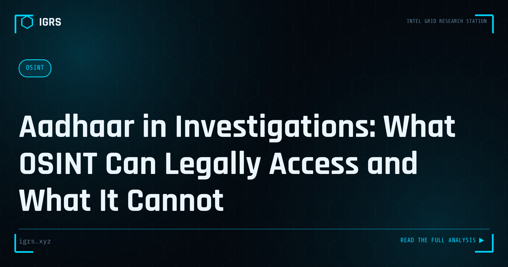

Aadhaar in Investigations: What OSINT Can Legally Access and What It Cannot
| File No. | IGRS-021/2026 |
| Subject | Legal boundaries for Aadhaar-related investigation under Indian law |
| Category | Law & Evidence |
| Author | Manuj Kumar Pandey |
| Published | 2026-04-23 |
| Reading time | 12 minutes |
Aadhaar data is central to Indian identity — but strict legal protections govern how it can be accessed and used in investigations. Where the lines are, and what happens when they are crossed.
Aadhaar and the OSINT Investigator's Dilemma
Aadhaar, India's biometric identity system covering over a billion people, presents both an opportunity and a serious legal minefield for investigators. While it is the master key to identity in India, the law surrounding its access and use is strict, and crossing the line can expose an investigator to criminal liability. This guide explains the legal limits of using Aadhaar in OSINT and investigations, helping practitioners stay on the right side of the law.
What the Law Says About Aadhaar Access
The Aadhaar Act 2016, together with the DPDP Act 2026, tightly governs who can access Aadhaar data and how. Key principles include:
- Unauthorised access to Aadhaar data is a criminal offence
- Authentication requires a logged, lawful purpose
- Storing Aadhaar numbers carries strict obligations
- Even authorised agencies must operate within defined channels
This means an investigator cannot simply look up or use someone's Aadhaar number freely, even in the course of an investigation, without proper authority and process.
Penalties for Aadhaar Misuse
| Violation | Consequence |
|---|---|
| Unauthorised access | Imprisonment up to 3 years and fine (Aadhaar Act) |
| Data protection failure | Penalties up to ₹250 crore (DPDP Act 2026) |
| Identity theft using Aadhaar | Section 66C IT Act |
| Unauthorised disclosure | Criminal liability under Aadhaar Act |
What Investigators Can and Cannot Do
The distinction is crucial:
- Permitted: Acting on Aadhaar data lawfully obtained through proper authority and documented process
- Permitted: Using TAFCOP-style verification within authorised channels for SIM investigation
- Not permitted: Looking up someone's Aadhaar number through unofficial means
- Not permitted: Purchasing leaked Aadhaar databases, even for investigation
- Not permitted: Storing or sharing Aadhaar data outside authorised systems
The Leaked Aadhaar Database Trap
Leaked Aadhaar databases circulate on the dark web and Telegram, and they present a serious trap for investigators. Accessing or purchasing such data — even with the intention of using it for a legitimate investigation — can constitute receiving stolen data and unauthorised access, exposing the investigator to the very liability they are trying to enforce against others. The legally sound approach is to obtain identity verification through official channels with proper authority, never through leaked data.
Legitimate Identity Verification Channels
Where identity verification is needed, lawful channels exist:
| Channel | Use |
|---|---|
| Authorised LEA portals | Identity verification with proper authority |
| Section 94 BNSS notice | Compel disclosure from banks/telecoms |
| UIDAI authorised process | For agencies with lawful authority |
| Court orders | Judicial direction for data access |
Aadhaar in the Investigation Workflow
Rather than seeking Aadhaar data directly, skilled investigators use lawful pivots. A phone number obtained in an investigation can be verified through authorised telecom channels; a bank account can yield KYC through legal notice. The Aadhaar linkage emerges through these proper channels rather than through direct, unauthorised Aadhaar lookups. This approach achieves the investigative goal while remaining legally robust.
The DPDP Act's Impact
The DPDP Act 2026 adds another layer of obligation. Personal data, including Aadhaar-linked information, must be processed for a lawful purpose with appropriate safeguards. While the Act provides exemptions for legitimate investigation under Section 17, these exemptions are not a blanket licence — the processing must still be necessary, proportionate, and documented. Investigators handling Aadhaar-linked data must ensure their practices align with data protection obligations.
Best Practices for Investigators
To stay legally sound when Aadhaar intersects with an investigation:
- Always operate through authorised channels with documented lawful purpose
- Never access, purchase, or store leaked Aadhaar data
- Use proper legal process (Section 94 BNSS) to compel identity disclosure
- Document the legal basis for every Aadhaar-related action
- Apply data minimisation — access only what the investigation requires
- Ensure compliance with both the Aadhaar Act and DPDP Act
Conclusion: Lawful Investigation Is Robust Investigation
The temptation to take shortcuts with Aadhaar data is understandable given its investigative power, but shortcuts expose both the case and the investigator to serious risk. Evidence obtained unlawfully can be challenged and excluded, and the investigator can face criminal liability. The disciplined approach — using authorised channels, proper legal process, and documented purpose — is not only legally safe but produces stronger, more defensible cases. In Aadhaar investigations, lawful and effective are the same path.